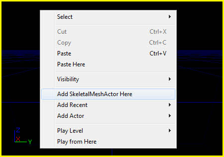
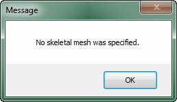
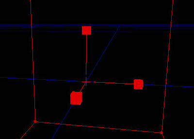
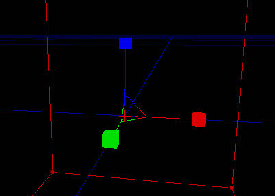
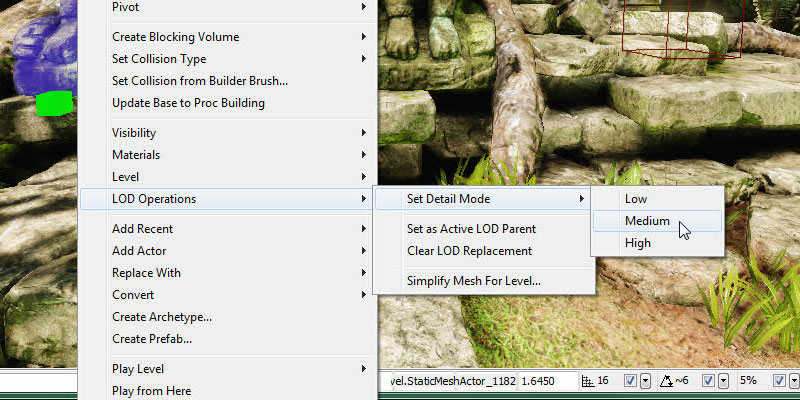
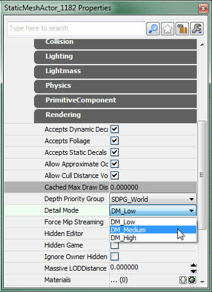

UDN
Search public documentation:
UnrealEdUserGuideKR
English Translation
日本語訳
中国翻译
Interested in the Unreal Engine?
Visit the Unreal Technology site.
Looking for jobs and company info?
Check out the Epic games site.
Questions about support via UDN?
Contact the UDN Staff
日本語訳
中国翻译
Interested in the Unreal Engine?
Visit the Unreal Technology site.
Looking for jobs and company info?
Check out the Epic games site.
Questions about support via UDN?
Contact the UDN Staff
UE3 홈 > 언리얼 에디터와 툴 > 언리얼 에디터 사용 안내서
언리얼 에디터 사용 안내서
Jeff Wilson 작성 및 업데이트. 홍성진 번역.
개요
에디터 열기
editor 명령줄 아규먼트를 붙여 실행시키면 됩니다.
예를 들어 UDK 프로젝트에는 Binaries 디렉토리 안에 UDK.exe 라는 컴파일된 실행 파일이 있습니다. UDK 에디터를 여는 명령은 다음과 같습니다:
UDK editor게임의 실행파일에
editor 를 붙인 바로가기를 만들어 두면, UnrealFrontend 어플리케이션이나 명령을 통하지 않고도 에디터를 쉽게 열어볼 수 있습니다.
레벨 제작하기
레벨 에디터 개요
에디터 인터페이스
레벨 에디터 창은 여러 부분으로 나뉘어 있습니다:
- 메뉴바
- 툴바
- 툴박스
- 뷰포트
- 상태바
메뉴바
레벨 에디터의 메뉴바는 다른 윈도우 어플리케이션을 사용해 본 사람이라면 누구나 익숙할 것입니다. UnrealEd 로 레벨을 제작하는 과정에 있어 필요한 툴과 명령 상당수를 제공해 줍니다. 메뉴바 관련 상세 정보는 Main Editor Menu Bar KR 페이지를 참고하시기 바랍니다.툴바
툴바는 대부분의 어플리케이션처럼 흔히 사용되는 툴과 명령을 빠르게 실행할 수 있는 명령 그룹입니다. 레벨 에디터의 메뉴에서 찾을 수 있는 것들 중 다수는 툴바의 버튼에서도 찾을 수 있습니다. 툴바 관련 상세 정보는 Main Editor Toolbar KR 페이지를 참고하시기 바랍니다.툴박스
툴박스는 현재 레벨 에디터 모드 변경, 빌더 브러시 모양 조정, BSP 지오메트리와 볼륨 새로 생성, 뷰포트 내 표시여부와 액터 선택 조정 등에 사용되는 툴 세트입니다. 툴박스 관련 상세 정보는 Main Editor Toolbox KR 페이지를 참고하시기 바랍니다.뷰포트
레벨 에디터의 뷰포트는 UnrealEd 로 만든 월드를 들여다 보는 창입니다. 다수의 오쏘그래픽(직교) (내려, 정면, 측면) 뷰와 퍼스펙티브(원근) 뷰를 제공하여, 무엇을 어떻게 바라볼 것인지 완벽한 제어가 가능합니다. UnrealEd 의 뷰포트 툴바 관련 상세 정보는 Viewport Toolbar KR 페이지를, 다양한 뷰모드에 대해서는 View Modes KR 페이지를, 다양한 표시여부 옵션에 대해서는 Show Flags KR 페이지를 참고하시기 바랍니다.콘트롤
뷰포트 이동 콘트롤과 키보드 콘트롤 및 단축키를 미리 알아두면 작업 속도를 높이는 데 도움이 되어 결국엔 시간을 절약할 수 있게 됩니다.마우스 콘트롤
마우스 콘트롤 목록에 대해서는 Editor Buttons KR 페이지를 참고하시기 바랍니다.키보드 콘트롤
키보드 콘트롤 목록에 대해서는 Editor Buttons KR 페이지를 참고하시기 바랍니다.핫키
에디터 핫키를 지정(bind)하고 에디터 핫키 명령을 새로 만드는 법에 대해서는 Editor Hotkeys KR 페이지를 참고하시기 바랍니다.레벨 작업하기
액터 놓기
모든 맵은 공백 상태로 시작합니다. 배경을 만들거나 월드를 채워넣으려면 액터를 맵에 놓아야 합니다. 그 방법은 여러가지가 있으나, 본질적으로는 모두 특정 클래스의 인스턴스를 새로 생성하여 이리저리 움직인 다음 그 프로퍼티를 변경하는 것입니다. 맵에 새로운 액터를 놓는 여러가지 방법은 아래와 같습니다.콘텐츠 브라우저에서
특정 애셋 타입은 콘텐츠 브라우저에서 선택한 다음, 한 뷰포트에서 우클릭 > "액터 추가" > 를 통해 알맞은 액터 유형의 인스턴스를 새로 할당해 줄 수 있습니다. 여기엔 선택된 애셋을 사용하여 추가할 수 있는 액터 유형 목록이 표시되는 메뉴가 뜹니다. 현재 로드된 애셋이 아니라면, 뜨는 메뉴 하단에 애셋을 로드할 수 있는 옵션이 생깁니다. 이 옵션을 선택하면 애셋을 로드하여 추가할 수 있는 액터 유형 옵션 메뉴가 뜹니다.
현재 로드된 애셋이 아니라면, 뜨는 메뉴 하단에 애셋을 로드할 수 있는 옵션이 생깁니다. 이 옵션을 선택하면 애셋을 로드하여 추가할 수 있는 액터 유형 옵션 메뉴가 뜹니다.

 콘텐츠 브라우저에서 맵에 놓을 수 있는 애셋 유형은:
콘텐츠 브라우저에서 맵에 놓을 수 있는 애셋 유형은:
- Static Meshes | 스태틱 메시
- Skeletal Meshes | 스켈레탈 메시
- Physics Assets | 피직스 애셋
- Fractured Static Meshes | 프랙처 스태틱 메시
- Particle System | 파티클 시스템
- Speed Trees | 스피드 트리
- Sound Cue | 사운드 큐
- Sound Wave | 사운드 웨이브
- Lens Flare | 렌즈 플레어
드래그 앤 드롭
뷰포트 맥락 메뉴를 통해 콘텐츠 브라우저에서 맵으로 특정 액터 유형을 추가하는 방법에 더해, 콘텐츠 브라우저에서 뷰포트에 놓고자 하는 위치로 액터를 끌어 놓는 식으로 간단히 추가할 수도 있습니다. 그 때 커서가 바뀌는 모양으로 뷰포트에 어떤 애셋이 놓이는지 알 수 있습니다. 콘텐츠 브라우저에서 애셋을 끌어다 놓을 때, 액터 유형에 해당하는 애셋 유형은 다음과 같습니다:
콘텐츠 브라우저에서 애셋을 끌어다 놓을 때, 액터 유형에 해당하는 애셋 유형은 다음과 같습니다:
- Static Meshes - StaticMeshActor | 스태틱 메시 는 스태틱 메시 액터
- Skeletal Meshes - SkeletalMeshActor | 스켈레탈 메시 는 스켈레탈 메시 액터
- Physics Assets - KAsset | 피직스 애셋 은 KAsset
- Fractured Static Meshes - FracturedStaticMeshActor | 프랙처 스태틱 메시 는 프랙처 스태틱 메시 액터
- Particle System - Emitter | 파티클 시스템 은 이미터
- Speed Trees - SpeedTreeActor | 스피드 트리 는 스피드 트리 액터
- Sound Cue - AmbientSound | 사운드 큐 는 앰비언트 사운드
- Sound Wave - AmbientSoundSimple | 사운드 웨이브 는 앰비언트 사운드 심플
- Lens Flare - LensFlareSource | 렌즈 플레어 는 렌즈 플레어 소스
액터 브라우저에서
끌어놓기가 매우 효율적이며 편하기는 하지만, 모든 액터 종류에 적용되지는 않습니다. 놓을수 있는 (액터 브라우저에 두껍게 표시되는) 액터는 어떤 것이든지 액터 브라우저에서 액터 클래스를 선택한 다음, 뷰포트에 우클릭, "[액터 클래스] 여기에 추가" 를 선택하여 맵에 놓을 수 있습니다. 콘텐츠 브라우저에서 특정 애셋 유형을 선택해 둔 상태라야 레벨에 놓을 수 있는 액터도 있습니다. 애초부터 콘텐츠 브라우저를 통해 맵에 그냥 놓을 수 있는 동일 액터 유형인 경우가 대부분 그렇습니다. 콘텐츠 브라우저에 올바른 애셋 유형이 선택되어 있지 않은 경우, 그 내용을 알리는 메시지가 뜹니다.
콘텐츠 브라우저에서 특정 애셋 유형을 선택해 둔 상태라야 레벨에 놓을 수 있는 액터도 있습니다. 애초부터 콘텐츠 브라우저를 통해 맵에 그냥 놓을 수 있는 동일 액터 유형인 경우가 대부분 그렇습니다. 콘텐츠 브라우저에 올바른 애셋 유형이 선택되어 있지 않은 경우, 그 내용을 알리는 메시지가 뜹니다.


액터 선택하기
액터 선택하기란 사실상 간단하긴 하지만, 레벨 편집 과정에 있어 매우 중요한 부분입니다. 올바른 액터 그룹을 빠르게 선택할 수 없다면 전체적인 과정이 늦춰지고 생산성도 낮아집니다. 액터나 그 그룹을 선택하는 방법은 여러가지 있으며, 자세한 내용은 다음과 같습니다.단순 선택
가장 기본적인 액터 선택 방법은 뷰포트에서 그 위에 좌클릭하는 것입니다. 액터에 클릭할 때마다 현재 선택된 액터의 선택이 해제되고 새로운 것이 선택됩니다. 새 액터를 클릭할 때 Ctrl 키가 눌린 상태라면, 선택에 새 액터가 추가됩니다. 이런 식으로 여러 액터를 선택한 다음 그룹으로 움직이거나, 선택된 액터 모두에 공유되는 프로퍼티가 있으면 프로퍼티 창에서 변경할 수도 있습니다. 이 방법은 소수의 액터나 맵 여기저기 퍼져있는 액터를 여럿 선택할 때 좋으나, 수가 많아지면 느리고 지루할 수 있습니다.
이런 식으로 여러 액터를 선택한 다음 그룹으로 움직이거나, 선택된 액터 모두에 공유되는 프로퍼티가 있으면 프로퍼티 창에서 변경할 수도 있습니다. 이 방법은 소수의 액터나 맵 여기저기 퍼져있는 액터를 여럿 선택할 때 좋으나, 수가 많아지면 느리고 지루할 수 있습니다.
범위 선택
범위 선택은 일정 구역에 있는 액터 그룹 선택/해제를 빠르게 할 수 있는 방법입니다. 이 선택법은 키 조합과 마우스 버튼을 클릭한 상태에서 커서를 끌어 상자를 그리는 방식으로 범위를 지정합니다. 박스 내 모든 액터는 누른 키 조합과 마우스 버튼에 따라 선택/해제 됩니다. 가능한 조합과 효과는:
가능한 조합과 효과는:
- Ctrl + Alt + 좌클릭 - 박스 내 액터를 현재 선택으로 대체합니다.
- Ctrl + Alt + Shift + 좌클릭 - 박스 내 액터를 현재 선택에 추가합니다.
- Ctrl + Alt + Shift + 우클릭 - 박스 내 액터를 현재 선택에서 제거합니다.
클래스로 선택 / 애셋으로 선택 / 프로퍼티로 선택
이 방법은 액터 클래스에 따라, 지정된 애셋이 사용되었는지에 따라, 일정 프로퍼티가 지정된 값인지에 따라 액터 그룹을 선택할 수 있는 방법입니다. (클래스나 애셋으로 선택하려는 경우) 액터를 미리 선택해 두거나, 프로퍼티와 값을 미리 활성화시켜 둬야 합니다. 뷰포트 맥락 메뉴를 통해 이러한 선택이 가능합니다.
액터 트랜스폼
액터 트랜스폼이란 액터의 트랜슬레이션(옮기기), 로테이션(회전), 스케일(크기)을 가리킵니다. 레벨 편집 과정에 있어서 엄청난 부분을 차지한다는 건 말할 필요도 없겠지요. 레벨 에디터에서 액터를 트랜스폼하는 기본적인 방법은 두 가지 있습니다.수동 트랜스폼
첫 방법은 프로퍼티 창에서 값을 수동으로 변경해 주는 것입니다. 어느 액터든 프로퍼티 창의 Movement 부분(의 Localtion, Rotation)과 Display 부분(의 DrawScale, DrawScale3D) 아래에 보면 중요 트랜스폼 프로퍼티를 전부 찾아볼 수 있습니다. 이런 방식이 액터의 배치, 방향, 크기를 미세하게 조절할 수 있다는 것은 확실합니다만, 직관적이지 못할 뿐만 아니라 여러번 시도하며 값을 바꿔가면서 종종 오차가 커 지기도 합니다.
상호작용형 트랜스폼
둘째 방법은 뷰포트에 표시된 비주얼 툴을 사용하는 방법인데, 마우스를 사용하여 뷰포트에서 직접 액터와 상호작용하는 방식으로 트랜스폼 가능합니다. 수동 방법과는 정 반대의 장단점이 있습니다. 이 방법은 사용하기에는 매우 직관적인 반면, 일정 상황에서는 중요할 수가 있는 정확도와는 거리가 있습니다. 드래그 그리드, 로테이션 그리드, 스케일 그리드를 통해 이 부분을 보완할 수 있기는 합니다. 잘 알려진 값이나 증가분으로 스냅하는(끌어붙이는) 기능을 통해 정교한 제어가 가능합니다. 이 방법은 트랜스폼에 사용할 기준 좌표계를 선택할 수 있기도 합니다. 즉 액터의 트랜스폼 작업을 월드 공간에서 (월드 축을 따라) 할 수도, 아니면 로컬 공간에서 (로컬 축을 따라) 할 수도 있다는 뜻입니다. 보다 유연한 방법인데, 값을 수동 입력하는 방법으로 이같은 작업을 할라 치면 복잡한 계산을 먼저 해 줘야 하니 거의 불가능에 가깝다 하겠습니다.
 뷰포트에서 액터를 조작하는 데 사용되는 비주얼 툴은 트랜스폼 위젯이라고도 합니다. 일반적으로 트랜스폼 위젯은, 영향을 끼치는 축에 따라 색을 입혀놓은 부분 여럿으로 이루어져 있습니다. 빨강은 X-축, 초록은 Y-축, 파랑은 Z-축에 영향을 끼침을 뜻합니다. 어떤 종류의 트랜스폼을 하려는지에 따라 여러가지 형태를 띌 수가 있는데, 대략적인 내용은 다음과 같습니다.
뷰포트에서 액터를 조작하는 데 사용되는 비주얼 툴은 트랜스폼 위젯이라고도 합니다. 일반적으로 트랜스폼 위젯은, 영향을 끼치는 축에 따라 색을 입혀놓은 부분 여럿으로 이루어져 있습니다. 빨강은 X-축, 초록은 Y-축, 파랑은 Z-축에 영향을 끼침을 뜻합니다. 어떤 종류의 트랜스폼을 하려는지에 따라 여러가지 형태를 띌 수가 있는데, 대략적인 내용은 다음과 같습니다.
트랜슬레이션 위젯
트랜슬레이션(translation, 옮기기) 위젯은 월드의 각 축 양수 방향을 가리키는 색 화살표 세트로 구성됩니다. 이들 각 화살표는 본질적으로 (그 위에 좌클릭하여) 잡아 끌면 선택된 액터를 해당 축 방향을 따라 옮기는 앤들입니다. 마우스 커서를 그 핸들 중 하나 위에 올리면, 커서가 바뀌고 핸들은 노랑으로 변하여, 클릭하고 끌면 오브젝트가 그 축을 따라 옮겨진다는 것을 나타냅니다. 한 축과 다른 축이 만나는 핸들 부분에서 나오는 선도 있습니다. 이들은 각각의 (XY, XZ, YZ) 면 중 하나에 정렬된 정사각형을 이룹니다. 그 중 하나를 클릭하고 끌면 액터가 그 면을 따라 옮겨지는데, 근본적으로는 액터의 이동을 그 면에 제한시키는 것입니다. 마우스 커서를 그 사각형 하나에 올리면, 마찬가지로 커서가 바뀌고 관련된 핸들이 노랗게 변합니다.
한 축과 다른 축이 만나는 핸들 부분에서 나오는 선도 있습니다. 이들은 각각의 (XY, XZ, YZ) 면 중 하나에 정렬된 정사각형을 이룹니다. 그 중 하나를 클릭하고 끌면 액터가 그 면을 따라 옮겨지는데, 근본적으로는 액터의 이동을 그 면에 제한시키는 것입니다. 마우스 커서를 그 사각형 하나에 올리면, 마찬가지로 커서가 바뀌고 관련된 핸들이 노랗게 변합니다.

로테이션 위젯
로테이션(rotation, 회전) 위젯은 각 축에 관련된 3색원 세트로, 잡아 끌면 선택된 액터를 해당 축 중심으로 회전시키는 것입니다. 로테이션 위젯의 경우, 원 하나가 영향을 끼치는 축은 그 원 자체와는 수직인 축입니다. 즉 XY 면에 놓인 원은 실제로 액터를 Z-축 중심으로 회전시킵니다. 트랜슬레이션 위젯과 마찬가지로 원 위에 마우스 커서를 올리면, 커서도 바뀌고 원도 노랑으로 변합니다.
균등 스케일 위젯
균등(uniform) 스케일 위젯은 잡아 끌면 세 축을 동시에 균등하게 스케일 조절하는 3 핸들 세트입니다. 모양은 트랜슬레이션 위젯과 비슷하나, 핸들 끝부분이 화살표가 아니라 작은 큐브 모양이라는 점이 다릅니다. 또 어느 핸들도 세 축 모두에 영향을 끼치기에, 핸들 색은 축마다 다를 것 없이 똑같은 빨강입니다.
비균등 스케일 위젯
비균등 스케일 위젯은 균등 스케일 위젯과 거의 같습니다만, 각각의 핸들을 잡아 끌었을 때 관련된 축의 스케일만 조절한다는 점이 다릅니다. 그렇기에 트랜슬레이션이나 로테이션 위젯과 같은 식으로 핸들 색을 입혀 놨습니다. 또한 트랜슬레이션 위젯을 면 단위로 옮기는 것과 같은 식으로, 두 축 스케일을 동시에 조절할 수도 있습니다.
디테일 모드
언리얼 엔진 3 에는 엔진과 각각의 액터에 디테일 모드 설정을 할 수 있는 기능이 있는데, 맵에 있는 액터 중 엔진에 설정된 디테일 모드 이하의 액터만 표시하도록 하는 기능입니다. 다양한 하드웨어 구성에서 돌아가는 레벨을 만드는 데 있어 매우 유용한 기능입니다. 디테일을 살리기만 할 뿐 레벨의 게임플레이에는 전혀 필수적이지 않은 액터가 있다면, 높은 디테일 모드에서만 표시되도록 하는 것이 좋을 것입니다. 게임플레이에 절대적으로 필수인 액터라면 항상 낮은 디테일 모드로 설정해야 사용자의 시스템 환경에 상관없이 항상 보이도록 할 수 있을 것입니다. 액터의 디테일 모드 설정은 두 가지 방법으로 가능합니다. 첫째, 뷰포트에서 액터를 선택한 다음 그 위에 우클릭하여 맥락 메뉴를 열고 LOD 연산 > 디테일 모드 설정 > [낮음, 중간, 높음] 중 하나를 선택하면 됩니다.
둘째 방법은 액터를 선택한 다음 프로퍼티를 열고 Detail Mode 프로퍼티를 찾습니다. 액터의 종류에 따라 있는 위치가 다르니 찾기가 까다로울 수는 있지만, 검색 기능을 활용하면 어렵지 않게 찾을 수 있을 것입니다.
레벨 에디터의 액터에 디테일 모드를 설정하는 것에 추가로, 레벨이 최종 사용자에게 어때 보이는지 더 잘 알아보기 위해, 현재 레벨을 임의의 디테일 모드로 미리볼 수 있는 기능도 있습니다. 그 용도로 쓸 디테일 모드 옵션이 보기 메뉴에 있으며, 옵션은 낮음, 중간, 높음 세 가지 입니다. 이를 통해 선택된 디테일 모드 이하의 액터만 보이도록 뷰를 필터링할 수 있습니다. 이 메뉴에서 낮음 을 선택하면 디테일 모드를 낮음 으로 선택한 액터만 보이게 됩니다. 중간 으로 선택하면 중간 과 낮음 으로 설정된 액터만 나오고, 그런 식입니다.

에디터 퍼포먼스
 주변에 있는 스트리밍 볼륨 약간만 표시되며, 새 레벨이 스트림 인 될 때면 로딩이 크게 버벅일 것입니다.
가끔 모든 레벨을 보이게 할 필요가 있는데, 그럴 때 나머지 옵션이 좋습니다.
주변에 있는 스트리밍 볼륨 약간만 표시되며, 새 레벨이 스트림 인 될 때면 로딩이 크게 버벅일 것입니다.
가끔 모든 레벨을 보이게 할 필요가 있는데, 그럴 때 나머지 옵션이 좋습니다.
- 최대 표시 거리
- 말 그대로 유일한 슬라이더 모양 옵션입니다.
- 실시간 업데이트 끄기
- 말 그대로입니다.
- 게임 모드
- 에디터 디버그 정보를 모두 숨깁니다. 결과는 가변적입니다.
- 라이팅 빌드하기
- 항상 가능하진 않지만, 라이팅이 빌드되지 않으면 에디터가 훨씬 느려질 수 있습니다.
- 라이팅제외 이동
- 말 그대로입니다.

- 라이팅제외 뷰모드
- 라이팅이 빌드되지 않았을 때 좋습니다.
- 다이내믹 섀도우 표시
- 라이팅이 빌드되지 않았을 때 좋습니다.
- 선택 표시
- 이 표시 옵션은 디폴트로 켜져 있는데, BSP 선택을 시각화시킬 수 있습니다. BSP 선택을 볼 필요가 없을 때 이 옵션을 끄면 에디터가 훨씬 빨라집니다.
- 씬 캡처 표시
- 씬 캡처 기능을 사용하는 씬에서 이 기능을 끄면 속도가 꽤 향상됩니다.